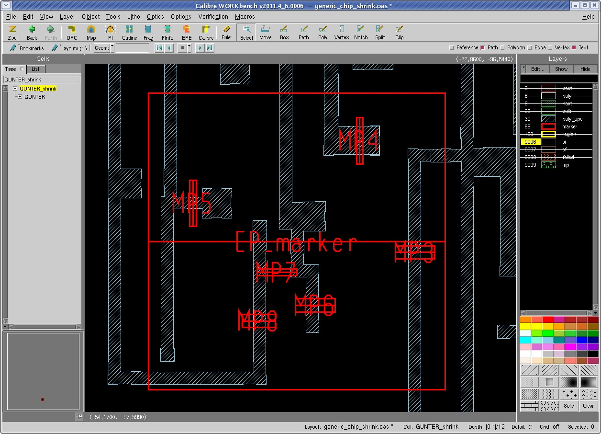
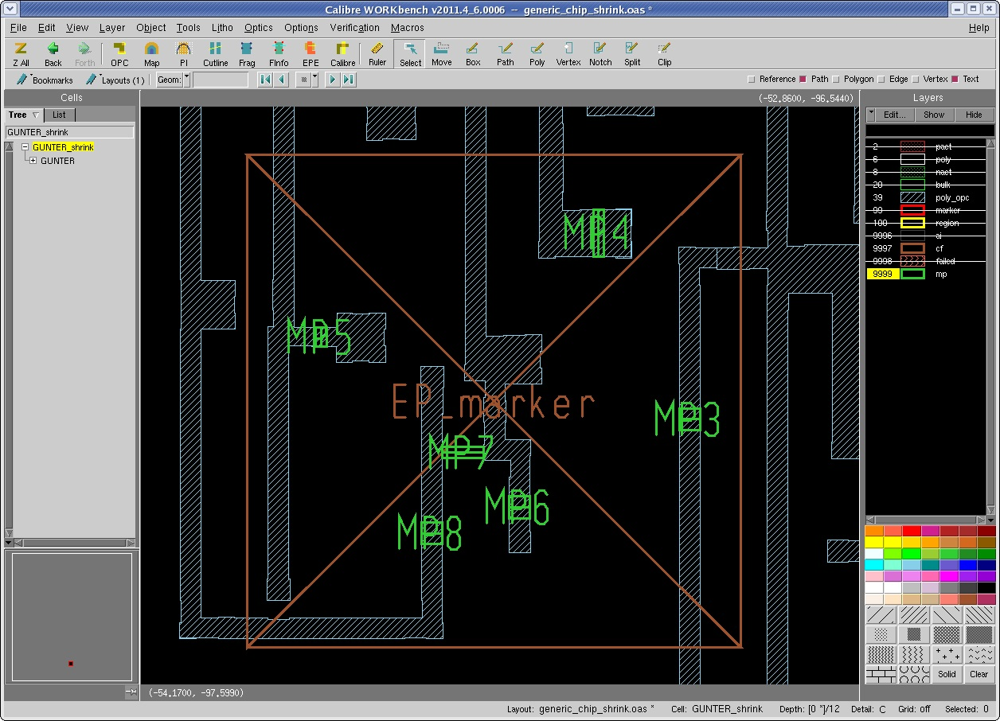

Measurements
can be designated to be in groups that are defined by rectangular
regions of the layout. these regions can be specified in the input
layout or CSV file, in which case they will be rendered in the layout
after assembly.
Prerequisites
Before starting this procedure,
you should have the following:
Procedure
- Add a marker at the center
of the field.
- Set the Size corresponding
to the desired tool magnification. Common values are 150,000X (0.9
um filed) or 200,000X (0.675 um field).
- Set the Orientation to the
desired scan direction.
- Mark the desired measurements
inside the bounds of the group marker.
- After generating CMi output,
there will be a single Capture Field at the location of the group
marker, indicating a successful grouping.
- Figure 1 illustrates an example of grouped markers. Figure 2 shows an example of the results.
Figure 1. Grouped Markers
Figure 2. Example Results